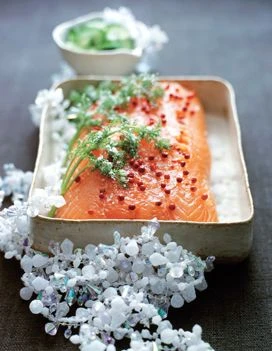

Saumon gravlax

Recette ©
Elle à table
Retour à la page d'accueil
Facile à faire, cette recette venue du Nord va impressionner vos convives.
Découvrez la délicieuse recette du saumon gravlax, un plat nordique
imprégné de saveurs exquises. Cette préparation ancestrale, venant tout
droit de Scandinavie, transforme le saumon frais en une véritable œuvre
gastronomique. Le saumon est méticuleusement assaisonné avec un mélange
subtil de sel, de sucre, et d'aneth frais, puis lentement mariné pendant
plusieurs heures. Le résultat est un saumon à la chair ferme, légèrement
salée et incroyablement parfumée. Agrémenté de tranches fines, le saumon
gravlax est parfait en entrée, sur des toasts croustillants ou dans des
salades fraîches. Laissez-vous séduire par ce voyage culinaire unique, où
la fraîcheur de la mer rencontre l'art du fumage !
Ingrédients
- 1,5 kg de saumon
- 4 cuillère(s) à soupe de sucre semoule
- 4 cuillère(s) à soupe de gros sel de mer
- 2 cuillère(s) à café de poivre concassé
- 2 cuillère(s) à café de baies roses
- 10 brins d'aneth
Étapes
-
Demandez à votre poissonnier de couper un tronçon de saumon juste après
la partie ventrale, de l’écailler puis d’en retirer l’arête centrale,
mais non la peau. Vous obtenez deux gros morceaux de poisson. Rincez-les
et épongez. Mélangez sucre, sel et poivre dans un bol. Lavez et séchez
l’aneth. Couchez un morceau de saumon dans un plat pouvant juste le
contenir, peau contre le plat.
-
Répartissez la moitié du mélange sucre-sel-poivre, des brins d’aneth, et
encore du mélange sucre-sel-poivre, etc. Posez le second morceau de
poisson sur le premier. Couvrez d’un film alimentaire et glissez au
réfrigérateur.
-
Laissez mariner le temps que vous voudrez, en retournant le saumon
plusieurs fois, et en éliminant le liquide qui s’écoule.
-
Au moment de servir, rincez et épongez le saumon. Posez-le côté peau sur
une planche et tranchez-le (la peau restera sur la planche une fois le
découpage terminé).
-
Parsemez de baies roses. Servez avec du concombre, du citron, du pain
polaire grillé.